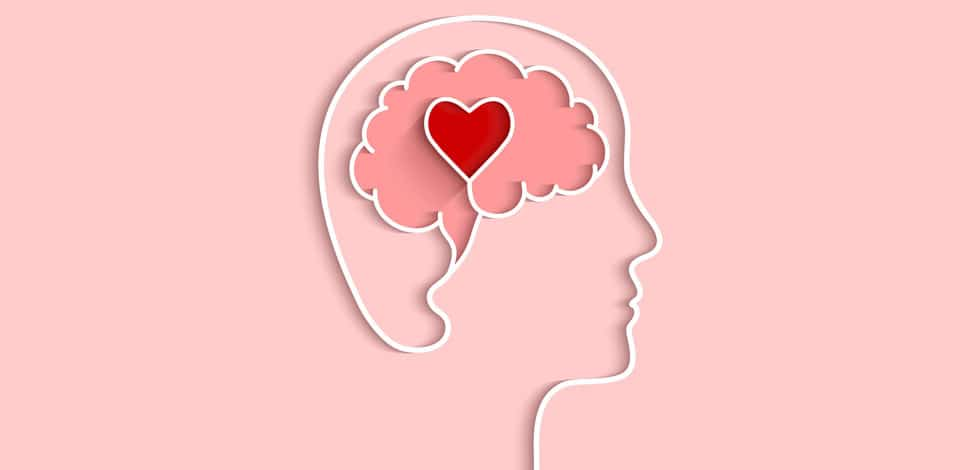

La salud mental incluye nuestro bienestar emocional, psicológico y social. Afecta la forma en que pensamos, sentimos y actuamos cuando enfrentamos la vida. También ayuda a determinar cómo manejamos el estrés, nos relacionamos con los demás y tomamos decisiones. La salud mental es importante en todas las etapas de la vida, desde la niñez y la adolescencia hasta la adultez y la vejez.
Las enfermedades mentales, también conocidas como trastornos mentales o trastornos psiquiátricos, son afecciones que afectan la salud mental de una persona y pueden alterar su pensamiento, comportamiento, emociones y funcionamiento en la vida cotidiana. Estas condiciones se caracterizan por patrones anormales o disfuncionales de pensamientos, emociones o comportamientos que causan malestar significativo o deterioro en el funcionamiento personal, social o laboral. Algunos de los trastornos mentales son la depresión, ansiedad, esquizofrenia, trastornos alimentarios, bipolaridad, entre otros.
La salud mental es crucial porque influye directamente en nuestra calidad de vida y bienestar en general. Una buena salud mental nos permite gestionar el estrés, tomar decisiones informadas, mantener relaciones saludables y llevar a cabo actividades diarias de manera efectiva. Además, está estrechamente relacionada con la salud física, ya que el estrés crónico y los problemas de salud mental no tratados pueden tener un impacto negativo en el cuerpo. Promover la salud mental es esencial para una sociedad productiva y armoniosa, y también para que cada individuo alcance su máximo potencial y disfrute de una vida plena y satisfactoria.
La salud mental puede ser influenciada por una serie de factores, que incluyen experiencias traumáticas, estrés crónico, problemas de relaciones interpersonales, factores genéticos, desequilibrios químicos en el cerebro, abuso de sustancias, condiciones médicas crónicas, dificultades económicas, falta de apoyo social, y estigmatización en torno a los trastornos mentales. También pueden afectarla el entorno laboral, las presiones sociales y las expectativas culturales. Es importante reconocer que la salud mental es un aspecto integral de nuestra vida y que muchas circunstancias y factores pueden influir en ella, por lo que es esencial buscar apoyo y atención adecuada cuando sea necesario para mantenerla en equilibrio.
Uno de los principales retos de la salud pública en relación con la salud mental es la falta de conciencia y estigmatización que rodea a los trastornos mentales. Esto puede llevar a un retraso en la búsqueda de ayuda y tratamiento, lo que a su vez agrava los problemas de salud mental. Además, la disponibilidad y accesibilidad limitada a servicios de salud mental de calidad es un desafío significativo en muchas regiones del mundo. La creciente carga de enfermedades mentales, como la depresión y la ansiedad, exige una respuesta integral que incluya la promoción de la salud mental, la prevención, el acceso a servicios de tratamiento y el combate al estigma. La inversión en recursos y la educación pública son esenciales para abordar este reto y mejorar la salud mental de las comunidades a nivel global.
La salud mental en la actualidad sigue siendo un tema de gran importancia y relevancia en la sociedad. A medida que se ha avanzado en la comprensión de la mente humana y su funcionamiento, se ha reconocido cada vez más la importancia de cuidar y promover la salud mental tanto como se cuida la salud física. Ha habido un aumento significativo en la conciencia pública sobre la salud mental. Las campañas de concientización, la representación en los medios de comunicación y la apertura en torno a las experiencias personales han ayudado a reducir el estigma asociado con los problemas de salud mental, aunque aún existen desafíos en algunos lugares, en muchos países se ha trabajado para mejorar el acceso a la atención en salud mental. Se han desarrollado recursos en línea, aplicaciones y servicios de teleterapia que permiten a las personas acceder a la ayuda profesional de manera más conveniente.
En general, la salud mental sigue siendo un área en evolución que requiere atención continua, inversión en investigación y un enfoque integral que incluya la prevención, el tratamiento y la promoción del bienestar emocional.